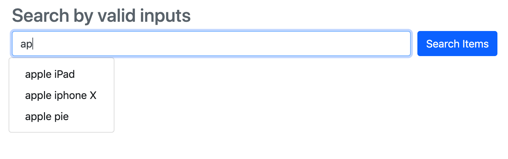
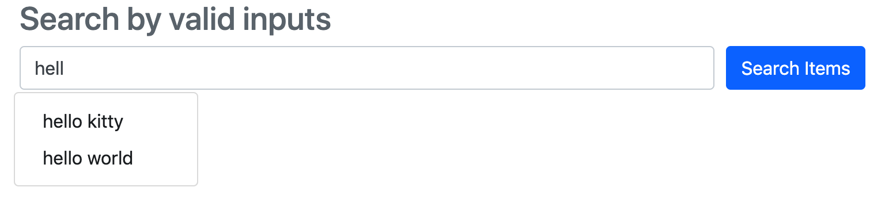

Input Autocomplete Implementation (jQuery + Ajax + Flask)
The core of the implementation is a binary search algorithm. The workflow is as follows:
- Search Bar Frontend receives a keyup signal from keyboard, then an Ajax post request
is issued, with data of the input value; - Receiving the data from post, the core binary search algorithm will take the data as
prefix and find out the range of valid input list whose prefixes are hit; - The valid input list is returned to the Frontend in json, and updated to a dropdown list.
Index page template
${search_app_DIR}/templates/index.html1
2
3
4
5
6
7
8
9
10
11
12
13
14
15
16
17
18
19
20
21
22
23
24
25
26
27
28
29
30
31
32
33
<html>
<head>
<link rel="stylesheet" href="{{ url_for('static', filename='css/bootstrap.min.css') }}">
<script src="{{ url_for('static', filename='js/jquery.min.js') }}"></script>
<script src="{{ url_for('static', filename='js/bootstrap.min.js') }}"></script>
<script src="{{ url_for('static', filename='js/input_dropdown.js') }}"></script>
</head>
<body>
<div class="container">
<br>
<div class="header clearfix">
<h3 class="text-muted">Search by valid inputs</h3>
</div>
<div class="row">
<form action="_prefix_search" method="POST" class="form-row col-md-10">
<div class="form-group col-md-8">
<input type="text" class="form-control" name="query" placeholder="Query">
<div id="input-dropdown" class="dropdown-menu">
</div>
</div>
<div class="form-group col-md-2">
<button type="submit" class="btn btn-primary">Search Items</button>
</div>
</form>
</div>
</div>
</body>
</html>
Ajax core
${search_app_DIR}/static/js/input_dropdown.js1
2
3
4
5
6
7
8
9
10
11
12
13
14
15
16
17
18
19
20
21
22
23
24
25
26
27
28
29
30
31
32
33
34
35$(document).ready(function(){
$("input[name ='query']").keyup(function(){
var input = $(this).val();
$.ajax({
type: 'POST',
url: '/_prefix_search',
data: {'prefix': input},
dataType: 'json',
success: function(response) {
$('#input-dropdown').empty('');
if ( $.isEmptyObject(response) ) {
$('#input-dropdown').removeClass('show');
}
else {
for (var i in response) {
$('#input-dropdown').append('<button class="dropdown-item" type="button" value="'
+ response[i] + '">' + response[i] + '</button>');
}
$('#input-dropdown').addClass('show');
}
},
error: function() {
alert("did not work");
location.reload(true);
}
});
});
$('#input-dropdown').on('click', '.dropdown-item', function(){
var text = $(this).attr('value');
$("input[name ='query']").val(text);
$('#input-dropdown').removeClass('show');
});
});
Backend core
${search_app_DIR}/application.py1
2
3
4
5
6
7
8
9
10
11
12
13
14
15
16
17
18
19
20
21
22
23
24
25
26
27
28
29
30
31
32
33
34
35
36
37
38
39
40
41
42
43
44
45
46
47
48
49
50
51
52
53
54
55
56
57
58
59
60
61
62
63
64
65
66
67
68
69
70
71
72
73
74
75
76
77
78
79
80
81
82#!/usr/bin/python
#coding=utf-8
import random
from flask import Flask, render_template, request, jsonify
app = Flask(__name__)
QueriesList = [
'hello world',
'hello kitty',
'apple pie',
'baby boomer',
'candy',
'black strawberry',
'apple iphone X',
'apple iPad',
'wash machine',
'school bus',
'c++'
]
QueriesList.sort()
def index():
return render_template('index.html')
def prefix_search_core(prefix):
"""@return: -1 , if not existed
(left_border, right_border), otherwise
"""
plen = len(prefix)
if plen == 0: return -1
left, right = 0, len(QueriesList) - 1
# locate the mid position where QueriesList[mid] contains prefix
while left < right:
mid = left + (right - left) / 2
if QueriesList[mid][:plen] > prefix:
right = mid - 1
elif QueriesList[mid][:plen] < prefix:
left = mid + 1
else:
break
if left >= right and QueriesList[left][:plen] != prefix: return -1
left_cache = left
right_cache = right
mid_cache = mid
# search left border
left = left_cache
right = mid_cache
while QueriesList[left][:plen] != prefix:
mid = left + (right - left) / 2
if QueriesList[mid][:plen] < prefix:
left = mid + 1
else:
right = mid
left_border = left
# search right border
left = mid_cache
right = right_cache
while QueriesList[right][:plen] != prefix:
mid = right - (right - left) / 2
if QueriesList[mid][:plen] > prefix:
right = mid - 1
else:
left = mid
right_border = right
return left_border, right_border
def prefix_search():
prefix = request.values.get('prefix', u'')
print "\tprefix:", prefix
borders = prefix_search_core(prefix)
related_qs = []
if borders != -1:
left_border, right_border = borders
# print left_border, right_border
related_qs = QueriesList[left_border:right_border+1]
return jsonify( related_qs )
if __name__ == "__main__":
app.run(host = '0.0.0.0', debug = True)
Launch application
1 | $cd ${search_app_DIR} |
Note that the application relies on bootstrap and jquery. Remember to put related bootstrap.min.js
and jquery.min.js (in the index.html headers) to the js folder ‘${search_app_DIR}/static/js/‘
If the application runs successfully, the link http://localhost:5000 will be:

